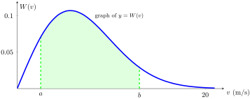

Skip to main content\(\newcommand{\N}{\mathbb N} \newcommand{\Z}{\mathbb Z} \newcommand{\Q}{\mathbb Q} \newcommand{\R}{\mathbb R}
\newcommand{\lt}{<}
\newcommand{\gt}{>}
\newcommand{\amp}{&}
\definecolor{fillinmathshade}{gray}{0.9}
\newcommand{\fillinmath}[1]{\mathchoice{\colorbox{fillinmathshade}{$\displaystyle \phantom{\,#1\,}$}}{\colorbox{fillinmathshade}{$\textstyle \phantom{\,#1\,}$}}{\colorbox{fillinmathshade}{$\scriptstyle \phantom{\,#1\,}$}}{\colorbox{fillinmathshade}{$\scriptscriptstyle\phantom{\,#1\,}$}}}
\)
Worksheet
1.
Evaluate the following definite integrals using the FTC part I.
-
\(\displaystyle \displaystyle \int_0^\frac{\pi}{3} \frac{\sin(\theta) + \sin(\theta)\tan^2(\theta)}{\sec^2(\theta)}\, d\theta\)
Hint.
A trigonometric identity you may find helpful here is
\begin{equation*}
1 + \tan^2(\theta) = \sec^2(\theta)
\end{equation*}
-
\(\displaystyle \displaystyle \int_1^2 \frac{(x - 1)^3}{x^2}\, dx\)
Hint.
This is more like a checking point. What is
\((x - 1)^3\text{?}\)
Richard can tell you right now that exponents do not distribute across the sum/difference, so
\begin{equation*}
(x - 1)^3 \neq x^3 - 1^3
\end{equation*}
2.
If
\(\displaystyle f(x) = \int_0^{\sin(x)} \sqrt{1 + t^2}\, dt\) and
\(\displaystyle g(y) = \int_3^y f(x)\, dx\text{,}\) find
\(g''\left(\dfrac{\pi}{6}\right)\text{.}\)
Hint.
Find the relationship between these two functions
\(f\) and
\(g\) first. Is
\(f\) the derivative or antiderivative of
\(g\text{?}\)
3.
A particle moves in a straight lin with the velocity
\begin{equation*}
v(t) = 36 - 24t + 3t^2 \quad \text{ (in m/s) }
\end{equation*}
Find the displacement and the total distance traveled over the interval \([0,10]\text{.}\)
4.
Wind engineers have found that wind speed \(v\) (in m/s) at a given location follows a Rayleigh distribution of the type
\begin{equation*}
W(v) = \frac{1}{32}ve^{-v^2/64}
\end{equation*}
This means that at a given moment in time, the probability that \(v\) lies between \(a\) and \(b\) is equal to the shaded area in the figure below.

Figure A.2.1. the shaded area is the probability that \(v\) lies between \(a\) and \(b\)
-
Show that the probability that
\(v\) lies between
\(0\) and
\(b\) is
\(1 - e^{-b^2/64}\text{.}\)
-
Calculate the probability that
\(v\) lies between
\(2\) and
\(5\text{.}\)